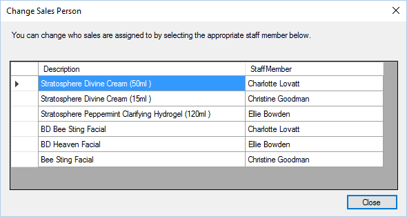
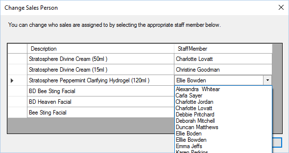

Each invoice will have a staff member assigned, who made the sale, this can be changed when
viewing the invoice. When viewing the invoice click “Change Sales Person”, you will then be
shown a form like:

Click into the Staff Member column and you can select a new member of staff from the list.

The changes are immediate.